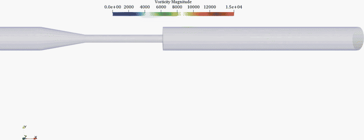

1-Medical Flows
Hemodynamic simulations in patient-specific or idealized vascular geometries, including aneurysm and artery-scale flow structures.
This site presents a lattice Boltzmann solver through a connected progression: first the canonical benchmark cases that verify core numerical behavior in 2D and 3D, then application-facing showcases that extend the same solver toward medical flows, turbulent flows, particle flows, chemical reaction, porous media, and crystallization.
Hemodynamic simulations in patient-specific or idealized vascular geometries, including aneurysm and artery-scale flow structures.
Unsteady vortical and turbulence-dominated flows for examining resolved structures, fluctuation behavior, and high-Reynolds-number transport.
Particle-laden and collision-driven flow problems that highlight multiphase motion, interaction dynamics, and suspended-body transport.
Reactive transport and coupled scalar-evolution cases for showing how the solver extends beyond pure hydrodynamics.
Flow and transport through permeable structures for studying pore-scale pathways, resistance effects, and coupled scalar movement.
Phase-change and crystal-growth simulations for presenting interfacial evolution, transport coupling, and pattern formation.
Beyond the canonical benchmarks, the solver is positioned to support application-facing demonstrations in medical flows, turbulent flows, particle flows, chemical reaction, porous media, and crystallization. This section frames how those results can be presented.
Show hemodynamic simulations with velocity fields, pressure distributions, and near-wall transport patterns in vascular geometries. The showcase below is organized as a navigable case directory so each topic can grow as more media and analysis are added.

Present turbulence-dominated simulations with coherent vortical structures, fluctuating fields, and transport signatures across higher-Reynolds-number regimes.

Display suspended-particle transport, collision events, and multiphase trajectories to illustrate interaction-dominated flow dynamics.
Present coupled flow and reaction cases through concentration contours, mixing fronts, and time-resolved evolution of reactive species.
Present pore-scale and continuum-scale transport through permeable domains, highlighting pathway selection, resistance effects, and coupled scalar migration.
Highlight nucleation and crystal-growth behavior with evolving interfaces, morphology changes, and transport-limited pattern formation.